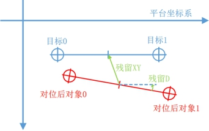
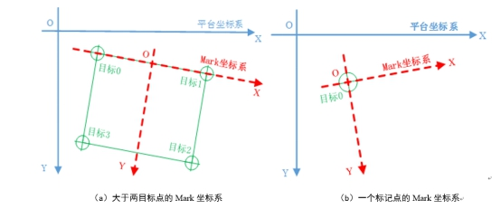
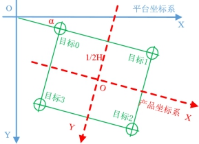
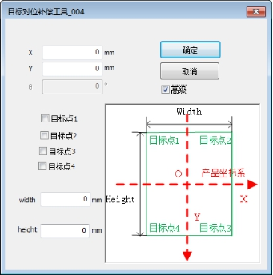

产品坐标系：以产品中心为坐标原点，以宽高方向分别作为X轴，Y轴方向的坐标系。


如图1，在实际项目中，如果对位后的目标和对象存在一个数值固定的位置偏差，可以通过对位补偿消除该误差。

目标对位补偿工具的功能是，在图像坐标转换为平台坐标后，在对位计算前，根据输入的补偿量和补偿方式，组合修正目标标记点的平台坐标，使用修正后的目标标记点对位计算，从而消除对位计算后的目标和对象间的固定位置偏差。
| 分类 | 参数名称 | 参数描述 |
|---|---|---|
| 属性窗口 | 目标对位补偿类型 | Mark坐标系：以输入平台坐标向量的前两个点连线与其中垂线构成的坐标系。 产品坐标系：以产品中心为坐标原点，以宽高方向分别作为X轴，Y轴方向的坐标系。 |
| 对位补偿量 | 输入的补偿量。 | |
| 产品宽度 | 产品实际规格的宽度，只在选定为产品坐标系下使用，用以计算产品坐标系，对应高级界面图中的Width。 | |
| 产品长度 | 产品实际规格的长度，只在选定为产品坐标系下使用，用以计算产品坐标系，对应高级界面图中的Height。 | |
| 图像窗口 | 无 | 无 |
| 数据链 | 目标平台坐标向量 | 待补偿的最初目标平台坐标向量。 |
| 动态补偿 | 决定是否在工程中自动进行补偿值计算并补偿。 |
|
| X补偿量 | 当采用动态补偿时，目标平台坐标向量会在固定X轴补偿量的基础上补偿该X补偿量。 | |
| Y补偿量 | 当采用动态补偿时，目标平台坐标向量会在固定Y轴补偿量的基础上补偿该Y补偿量。 | |
| 角度补偿量 | 当采用动态补偿时，目标平台坐标向量会在固定角度补偿量的基础上补偿该D角度补偿量。 | |
| 是否绝对动态补偿量 | 当为是时，属性栏的补偿量会自动同步至和链接的补偿量一致；当为否时，每次执行工具后，属性栏的补偿量都会加上参数链中链接的补偿值。 |
| 分类 | 参数名称 | 参数描述 |
|---|---|---|
| 监视窗口 | 输出目标平台坐标向量 | 补偿计算后的目标平台坐标向量结果。 |
| 产品坐标系中心点坐标 | 补偿后的产品坐标系的原点的位置坐标值（仅在产品坐标系类型下启用）。 | |
| 输出角度 | 补偿后产品坐标系X轴的角度值（仅在产品坐标系类型下启用，当前工具未实现此参数）。 | |
| 执行结果 | 工具执行结果。 | |
| 执行时间 | 工具执行时间。 | |
| 图像窗口 | 无 | |
| 数据链 | 目标平台坐标向量 | 补偿计算后的目标平台坐标向量结果，供后序工具使用，同监视窗口。 |
Mark坐标系的定义是，在大于等于两个标记点的对位系统中，以从标记点0到标记点1的射线为X轴正方向，以标记点0和标记点1的中点为原点，经过原点垂直于X轴且符合左手坐标系的方向为Y轴正方向，如图2（a）所示。
当只有一个标记点时，原点建立在标记点0上，X轴方向为标记点代表的产品在平台坐标系下的角度，Y轴经过原点且垂直于X轴，同样符合左手坐标系，如图2（b）所示。一个标记点的对位应用场景，多见于探针机械手拾取、XY平台点胶对位、以及其他对位应用（道元振动马达贴标项目）。

产品坐标系补偿是指在产品坐标系下进行补偿，旋转补偿时以产品坐标系原点O进行旋转，平移补偿时以旋转后的产品坐标系的X和Y方向进行平移。
产品坐标系的原点建立与矩形产品的中心重合，该原点的平台坐标是通过输入目标点的坐标与位置关系，结合产品的实际宽高尺寸来计算得出。产品坐标系的X轴方向即为与产品的宽方向平行向右，Y方向为产品的高方向平行向下，符合左手坐标系。产品坐标系如图3所示。

输入型的判断动态补偿判定条件。当为真时，则采用链入的X/Y/角度补偿量加上相应的固定补偿量作为最终的目标对位补偿量。该功能可用于工程的对位自动补偿场景中，即对位后，采用相机进行测量计算动态的补偿量，而后动态补偿入补偿量；当为假时，则不采用动态补偿，只采用固定补偿；
当Mark坐标系时，根据输入目标平台坐标向量的前两个点的连线以及中垂线作为坐标系，此时高级界面仅作为补偿量输入对话框使用。
当产品坐标系时，此时工具的高级界面如图4。界面上端的输入X、Y、θ输入框依然为简单的补偿量输入框。而下端红线框出的部分表示了不同目标点位置输入决定了产品坐标系不同的计算方式。对应右边图示，工程师需要根据实际项目需要勾选相应的目标点复选框，并由实际产品规格来输入产品的宽和长。

注意勾选目标点复选框与输入目标平台向量中点的顺序关系。
当勾选目标点1+目标点2+…：则输入向量前两点依次为目标点1、目标点2，后不做需求；
当勾选目标点2+目标点3(+目标点4)：则输入向量前两点依次为目标点2、目标点3，后不做需求；
当只勾选目标点3+目标点4(+目标点1)：则输入向量两点顺序为目标点4、目标点3；
当只勾选目标点1+目标点3：输入向量前两点依次为目标点1、目标点3；
当只勾选目标点2+目标点4：输入向量两点依次为目标4、目标点2；
当只勾选目标点1+目标点4：则输入向量两点顺序为目标点1、目标点4；
参见“\Samples\标准标定+基准两点对位.gvp”